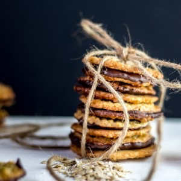
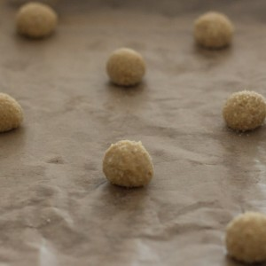
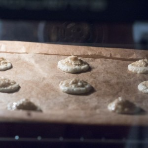

Kakor chokladflarn

Aujourd’hui on se retrouve avec un nouvel article au titre carrément imprononçable car il s’agit (lisez-le à haute voix c’est plus marrant^^) de la recette des kakor chokladflarn que vous connaissez aussi surement sous le nom d’havreflarn.
Je sais pas si tout le monde a reconnu ce que sont les kakor chokladflarn mais il s’agit des gâteaux que l’on trouve dans un célèbre magasin de meubles suédois aux noms tout autant imprononçables (je parle bien du nom des meubles) et dont tout le monde raffole (enfin je crois!) bref vous l’aurez compris il s’agit des biscuits au chocolat que l’on trouve à Ikea. Cela faisait très très longtemps que je voulais les faire moi-même mais à chaque fois que je passais dans ce magasin ou dans le magasin d’à côté c’était plus fort que moi je finissais toujours par acheter une boîte de (encore à haute voix^^) kakor chokladflarn ou plus facilement des havreflarn!! Je pense que l’appellation biscuits suédois au chocolat est un peu plus facile à prononcer et vu que ça veut dire la même chose alors on va essayer de ne pas trop se compliquer la vie (pas comme avec leur notice!!). Dans la recette je fais des galettes que je réunis entre elles grâce à du chocolat car c’est comme ça que je les achète, mais c’est aussi comme ça que je les préfère. Pourtant, sachez qu’il est absolument possible de ne faire que des galettes simples et de « zapper » totalement la partie avec le chocolat (mon chéri les préfère largement comme ça lui). Si vous avez un petit four comme le mien il faudra faire plusieurs fournées et c’est vrai qu’avez la chaleur ce n’est jamais très agréable mais finalement quand le résultat est là on en oublie vite la petite suée… J’ai trouvé cette recette dans le livre de cuisine les desserts de Bernard que j’ai suivi à la lettre cette fois-ci et le résultat fut totalement au rendez-vous! Je vous laisse maintenant découvrir la recette des kakor chokladflarn et j’espère qu’elle vous plaira!
Tout en bas de la recette vous trouverez des petits conseils qui je pense sont bons à suivre pour réussir au mieux ces petits biscuits
Note : – Pour obtenir des galettes « presque parfaites » il est important de respecter la pesée et de faire des galettes de 8g – Vous pouvez remplacer la margarine par du beurre mais le beurre risque de masquer le goût des flocons d’avoine et du chocolat et le goût sera alors différent – Vous pouvez utiliser du chocolat à pâtisser normal mais il faudra alors de préférence penser à le tempérer. Pour tempérer du chocolat rdv ICI – Si vos galettes montent de trop c’est qu’il n’y a pas assez de levure chimique. Il faut donc bien respecter les dosages de levure et bicarbonate et les incorporer dans la pâte refroidie comme indiquait dans la recette.
Ingrédients
- Flocons d'avoine - 200g
- Sucre - 300g
- Margarine ou matière grasse spéciale cuisson - 180g
- Farine - 70g
- Vanille - 1 càc
- Oeuf - 60g
- Sel - 1 pincée
- Levure chimique - 1/4 càc
- Bicarbonate de sodium - 1/4 càc
- Chocolat de couverture noir ou au lait - 350g
Instructions
- Faire fondre la margarine
- Verser les flocons d'avoine dans un mixeur
- Mixer rapidement jusqu'à obtenir une poudre fine
- Ajouter le sucre, le sel et la farine
- Mélanger
- Verser la margarine fondue, l’œuf et la vanille liquide
- Mélanger
- Laisser refroidir à température ambiante et ajouter la levure chimique et le bicarbonate de sodium
- Mélanger jusqu'à obtenir un mélange bien homogène
- Laisser au frais minimum deux heures (toute une nuit c'est mieux!!)
- Préchauffer le four à 180°
- Le lendemain , ou deux heures après, réalisez des boules de pâtes
- Pour obtenir des galettes parfaites, réaliser des boules de 8g chacune
- Posez-les sur une plaque à pâtisserie recouverte de papier sulfurisé en les espaçant suffisamment (elles vont s'étaler sur 8cm environ) Attention : n'aplatissez pas les boules elles vont s'étaler toutes seules pendant la cuisson
- Enfournez-les pendant 8-9 minutes
- Les galettes doivent être dorées sur le pourtour et un peu plus claires au centre
- Laissez-les refroidir et durcir sur une grille à pâtisserie
- Placer les biscuits dans une boîte hermétique au fur et à mesure car les galettes craignent l'humidité
- Faire fondre le chocolat au bain marie (ou au micro-ondes 20 sec par 20 sec)
- Prenez une galette et posez-la à plat dans le chocolat fondu (les bords doivent aussi bien toucher le chocolat)
- Retournez la galette et posez en une deuxième sur le dessus
- Laisser refroidir pour que le chocolat prenne
- Placer dans une boîte hermétique (ils se conservent pendant 1 mois à l'abri de l'air et de l'humidité)


Les tips de la communauté
Recette de biscuits suédois découverte pendant vacances. Commentaires enthousiasts avec volonté de tester. Lecteurs impressionnés par la recette partagée. Sentiment très positif avec mentions de tests prévus.
Astuces
- Biscuit suédois à tester en priorité
Ajustements signalés
- vite y remedier 😉 Bisous
- de ce fait bien surveiller le temps de cuisson car ils sont déjà « plats », et cuisent plus vites ! Le procédé a bien fonctionné (même si les biscuits n’avaient pas tous une forme parfaite 😉 mais ça fait partie du jeu « fait maison » non ?)